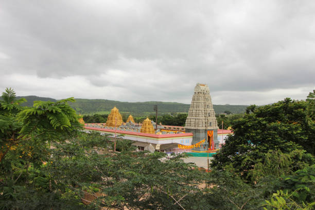
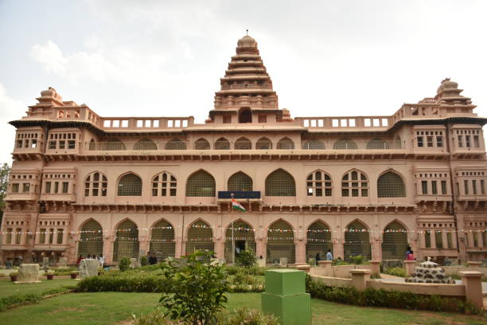
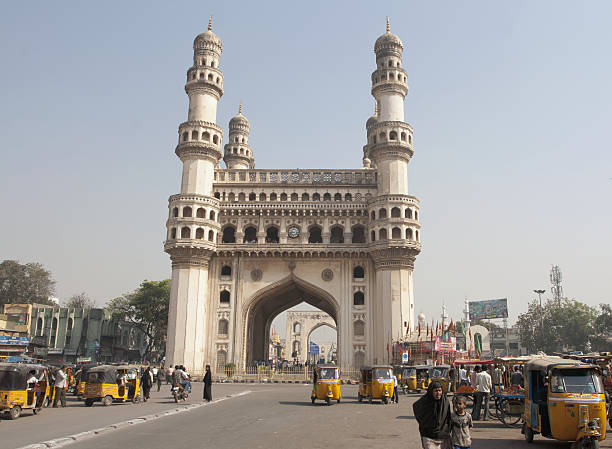

- 
Tirumala
Tirumala is a spiritual town in Tirupati district of the Indian state of Andhra Pradesh. It is one of the suburbs of the Tirupati urban agglomeration.
- 
Chandragiri Fort
Chandragiri Fort is an historical fort, built in the 11th century located at Chandragiri suburb in Tirupati. It is situated in Tirupati district of Andhra Pradesh, India.
- 
Charminar
The Charminar is a monument located in Hyderabad, Telangana, India. Constructed in 1591, the landmark is a symbol of Hyderabad and officially incorporated in the emblem of Telangana.

Himalayas
The Himalayas, or Himalaya , is a mountain range in Asia, separating the plains of the Indian subcontinent from the Tibetan Plateau.

India Gate
The India Gate is a war memorial located near the Kartavya path on the eastern edge of the "ceremonial axis" of New Delhi, formerly called duty path.
-
Ooty
Popularly referred to as Ooty, this gem among southern hill resorts is covered in eucalyptus and pine trees and coffee and tea plantations..

Red Fort
The Red Fort or Lal Qila is a historic fort in the Old Delhi neighbourhood of Delhi, India, that historically served as the main residence of the Mughal emperors.
-
Taj Mahal
he Taj MahalCrown of the Palace is an Islamic ivory-white marble mausoleum on the right bank of the river Yamuna in Agra, Uttar Pradesh, India. It was commissioned in 1631 by the fifth Mughal emperor, Shah Jahan